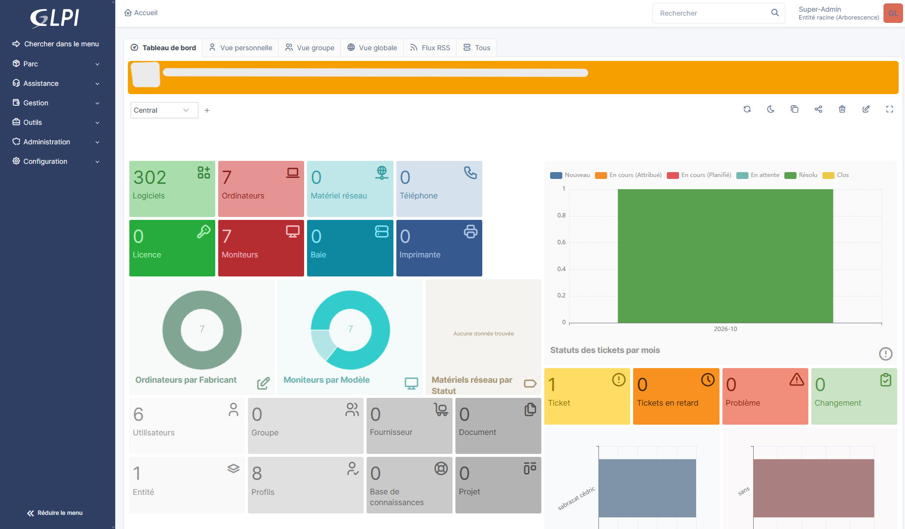
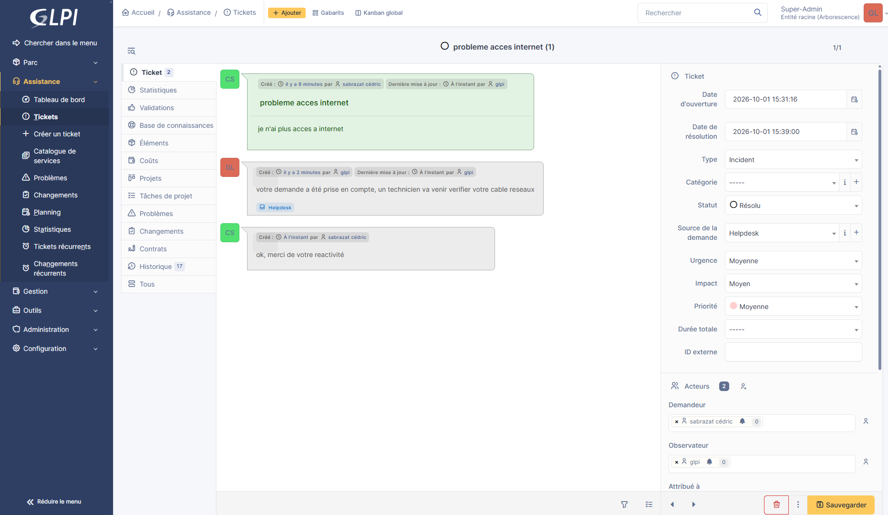

Certification SecNum
CybersécuritéParcours de sensibilisation à la cybersécurité et enjeux du numerique.
Voir le certificatBTS SIO Option SLAM
Ce portfolio présente les compétences acquises durant ma formation en Services Informatiques aux Organisations, option Solutions Logicielles et Applications Métiers. Il est structuré selon la grille d'évaluation E5 et met en avant mes réalisations techniques ainsi que ma démarche professionnelle.
Conception et maintenance d'applications web et mobiles.
Planification, tests et déploiement de services informatiques.
Évaluation des niveaux de maîtrise selon le référentiel BTS SIO.
Le recensement du patrimoine informatique est exhaustif. Les droits mis en place correspondent aux habilitations. Les sauvegardes sont réalisées conformément au plan.

Diagnostic adéquat et efficient. Solution mise en œuvre respectant les normes. Compte rendu clair et explicite.

Image conforme aux attentes. Mentions légales conformes. Visibilité satisfaisante. Site Web évolué conformément au besoin.
Analyse des besoins pertinente. Découpage en tâches réaliste. Livrables conformes. Projet documenté.
Tests pertinents rédigés et effectués. Rapport de test produit. Service déployé opérationnel.
Veille régulière sur les technologies émergentes. Identité professionnelle visible sur les réseaux.
Projets développés dans le cadre de la formation et des stages.
Développement d'une application python permettans d'extraire des information dans un fichier pdf crystal report et de l'organisee dans un fichier json.
Modernisation du site ADDA fictive cree sous LARAVEL.
Creation d'un homelab et monitoring de celle-ci.
Retrouvez mon profil et mes activités de programmation sur CodinGame.
Voir mon profilLa réalisation de ce jeu m'a aidé à travailler en équipe, à communiquer et à coordonner les tâches avec les autres membres du projet.
Voir le détailValider mon BTS SIO option SLAM en démontrant ma capacité à concevoir, développer et maintenir des solutions logicielles adaptées aux besoins métiers. Je souhaite aller dans une ecole d'ingenieurie.
Pour rester compétitif, j'ai mis en place une stratégie de veille active :
Je maintiens un profil GitHub actif présentant mes codes sources et un profil LinkedIn professionnel mettant en avant mes certifications et expériences de stage.
Retrouvez ici les certifications obtenues et les compétences validées.
Parcours de sensibilisation à la cybersécurité et enjeux du numerique.
Voir le certificat